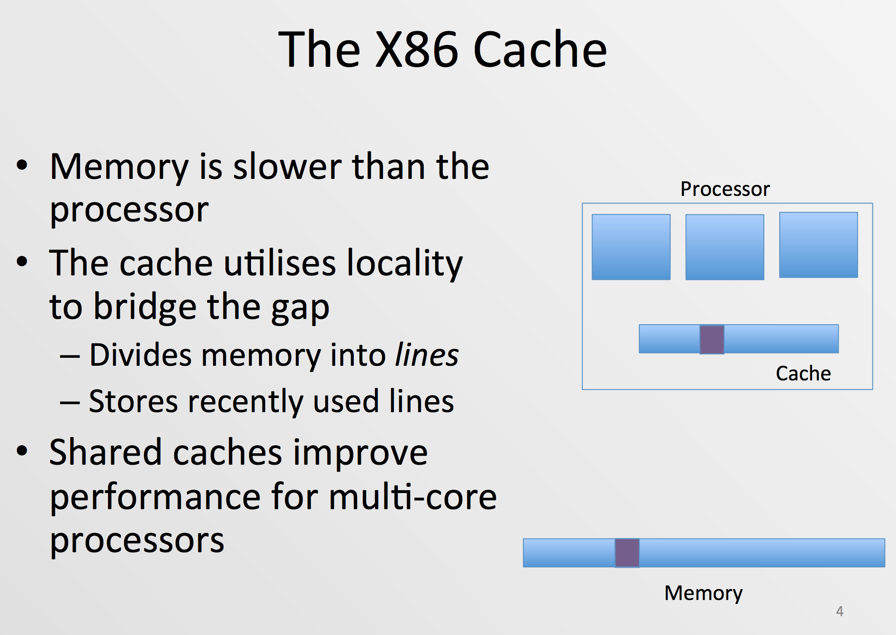
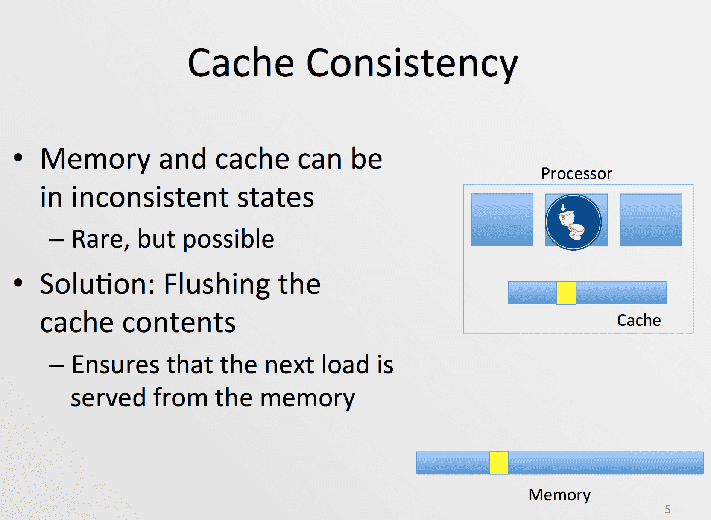
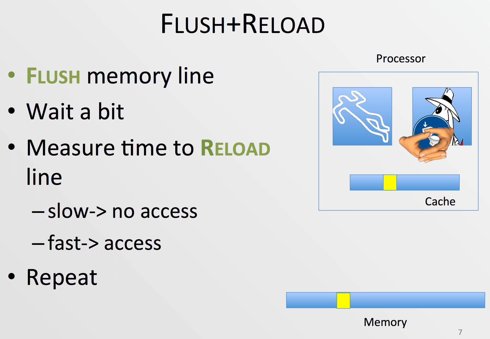

Flush & Reload Attack 与 Meltdown
今天听了银奎老师分享的最近火热技术圈的 Meltdown 漏洞的基本原理，才知道原来底层系统的世界是如此的丰富多彩。Meltdown 漏洞的 POC 实现基于了一种名为 “Flush & Reload” 的黑客攻击技术，这项技术的基本原理是利用 Memory 和 Cache 之间的关系，同时利用统计学的置信程度来筛选关键信息的。

Cache 主要用来环境 CPU 和内存直接的数据处理速度差异。

在 Cache 和内存中所存储的数据内容可能并不一致，此时则需要清空 Cache 中的数据，让 CPU 直接从内存中读取数据。

根据 Memory 和 Cache 之间的关系，应用程序从 Cache 和直接从 Memory 中读取数据所花费的时间片是不相同的。CPU 会将会将最近一次从 Memory 读取到的值存放到 Cache 中以方便 CPU 直接进行使用。在 CPU 和实际的 Memory Line 直接存在中从 L1 到 L5 甚至更多层级的中间 Cache，这些 Cache 分别有着各自的作用，但总体来说都是为了减少 Memory 读写速度和 CPU 处理数据之间的速度差异。
“Meltdown” 漏洞的出现本身是由于 X86 CPU 硬件层的投机执行和乱序执行导致的。当应用程序在用户态访问内核态的数据时，当内核态从宏观层面在向用户态抛出“段错误”的异常时，其实 CPU 在微观层面已经将这些内核态的数据读取到了相应的内部寄存器中，只不过在 “Flush & Reload” 技术出现之前，我们无法从用户态读取到这些寄存器中的数据而已。
由于 CPU 的投机执行和乱序执行问题，假如我们在程序中加入了一段用于访问内核态数据的代码。程序运行时，CPU 发现这句代码越权操作，但是其实在向用户态报告错误之前，并行流水线便已经执行完这条用于读取内核态数据的指令了，而这部分被读取到的数据被存放到了 CPU 的内部寄存器中。由于数据被存储在 CPU 的内部寄存器中，因而无法直接被用户态的程序获取，这里我们就要通过 “Flush & Reload” 方法来获取这个存储在内部寄存器的值。
实际上，CPU 的并行流水线会在当前异常结果（比如由于越权读取等操作造成的）上报后恢复现场，即将相关的“越权”用户态操作全部抛弃掉，因此我们无法直接将这个获取到的内核数据赋值给一个变量，因为这句代码本身也会被视为越权操作。但是由于 CPU 本身的设计缺陷，通过 “Flush & Reload” 这种方式来获取数据并不会被 CPU 认为是越权操作。我们通过在用户态环境中维护一个大数组来实现 “Flush & Reload” 操作。通过在获取到内核数据时，访问该大数组对应该内核数据加特定偏移位置的数组项，我们可以强制将数组该位置的内容存储到 Cache 中。而后通过测量这个大数组中各个索引位置的访问时间来推测对应的数据值，即测量数组各个位置的“温度”来反推获取到的内核数据值是多少。